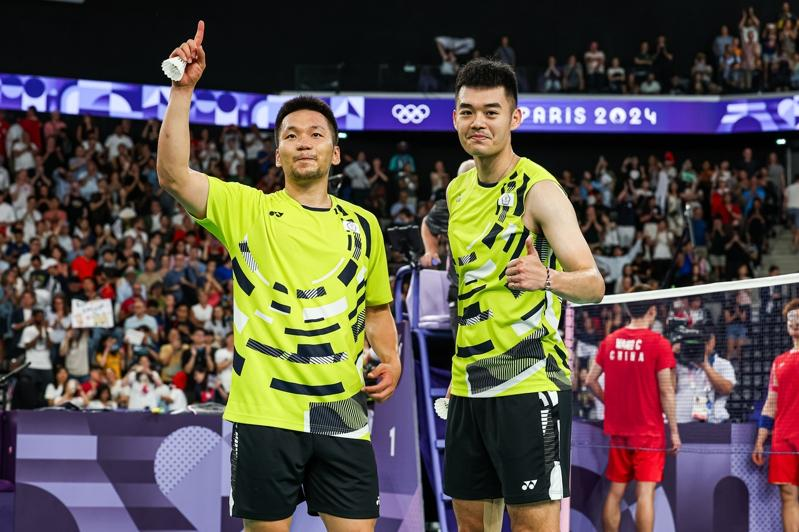

巴黎奥运中华队羽球男双李洋、王齐麟再夺金牌，振奋各界，促成麟洋配的教练廖焜福表示，两人在搭挡前感情就很好，甚至会私下去看对方比赛，当初也看中两人个性不同能互补，成功撮合，造就佳绩。曾带过「麟洋配」的教练廖伟喆也夸赞，两人这次比赛心态上比东京奥运更加成熟，从小组赛到金牌赛不管领先或落后，都能稳定下来，成为二连霸的关键主因。
「麟洋配」的促成者、现为台北市立大学球类学系名誉教授廖焜福表示，两人国中就是同学，搭挡前感情就相当好，有时还会私下观看对方比赛，为对方加油，因此在促成这个组合前，就很看好他们表现，除了两人排名都相当前面外，李洋沈稳情绪更能安抚「比较有个性」的王齐麟，现在回头看果然收到很好的成效。
廖焜福说，金牌战看下来，两人比东京奥运心态上更佳成熟，在面对每颗球都不疾不徐慢慢来，落后时也不会过于急躁，甚至大家热烈讨论王齐麟「躺着打都能赢」也是因为其个子高，有时候对面压下来的球，必须将重心放低去打，也因更珍惜每一球，因此躺着都得回球，更重要是因为有观众加油，让他们可以在第三局顶住压力赢下比赛。
过去也曾担任李洋、王齐麟以及球后戴资颖教练、北市大球类运动学系助理教授廖伟喆则夸赞，两人在第一场打赢日本就看得出手感非常好，而且从小组赛开始，虽然进入死亡之组，但是两人展现拚劲，特别是王齐麟防守上有很大的进步，加上李洋网前变化，对手也有一些失误，让两人成功抱回金杯。
两人目前也正就读北市大博士班，北市大校长邱英浩表示，两人预计7日回国，到时学校体育学院团队会去接机，但刚好那天他要出差东京，但会通过视频方式送上祝福，接下来也会邀两人看能否办一场茶会与校内学生们经验分享。
巴黎奥运热话题
- 拜尔丝向她鞠躬 巴西金牌安德拉德 从贫民窟走向女王
- 郑钦文备战北美赛季 无缘担任中国队闭幕式掌旗官
- 感人瞬间 中国何冰娇摘银 颁奖台上却秀了西班牙徽章
- 美国队莱尔斯「龟派气功」庆夺金 日媒：跑最快的动漫迷
- 选手村太热没冷气 意大利金牌索性去公园睡觉